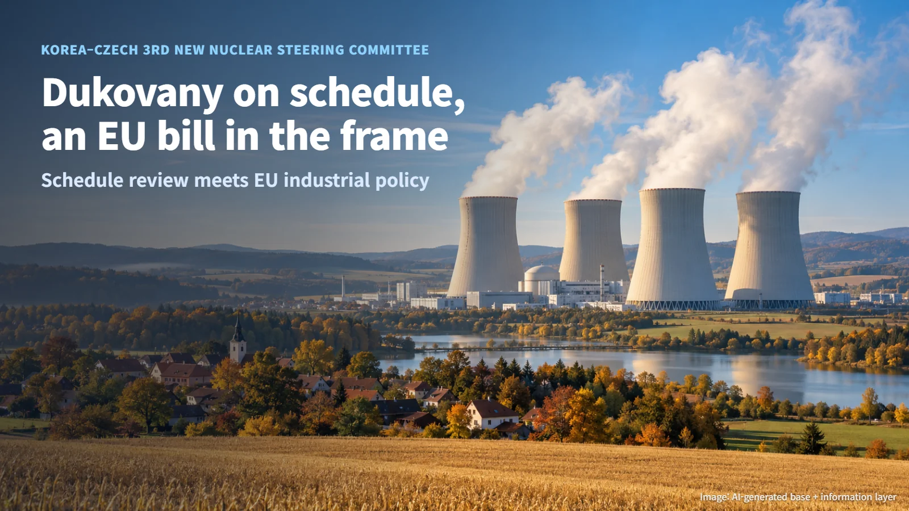
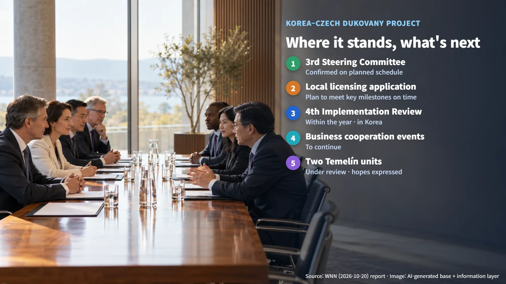
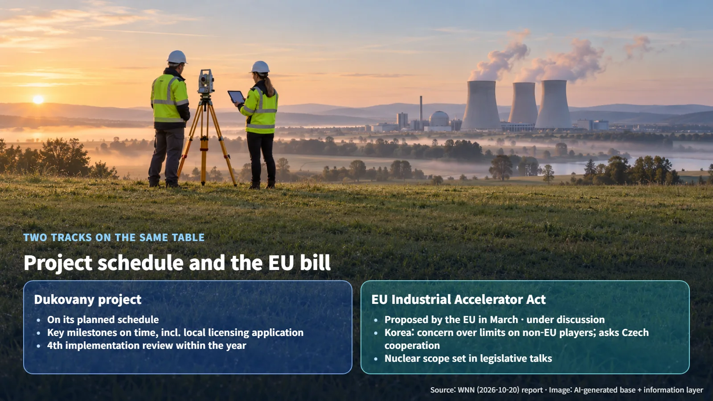

Czech Republic · Dukovany
Dukovany on Schedule, an EU Bill in the Background: Inside the Korea–Czech Nuclear Steering Committee
Korea and the Czech Republic confirmed the Dukovany project is on its planned schedule, while Korea raised concerns about the EU's proposed Industrial Accelerator Act.
News about the Czech new-build nuclear project arrives regularly, yet it can be hard to tell at a glance exactly which stage the project has reached. Lately, a piece of EU legislation has started to appear in the same headlines. How does a power plant construction project connect with a European industrial policy bill? Using the Korea–Czech meeting reported on October 20, 2026, let us walk through it step by step.

What the Third Steering Committee Confirmed
On October 20, 2026, World Nuclear News (WNN) reported that Korea and the Czech Republic held the third meeting of their new nuclear power plant steering committee and confirmed that the Dukovany project is progressing in line with its planned schedule. The report cited an announcement by Korea's Ministry of Trade, Industry and Energy. A nuclear project is a long sequence of design, licensing, procurement and construction, so checking that each stage arrives on time is itself the core of project management.
A steering committee is a body in which the two partners behind a large project meet regularly to review progress. Think of a homeowner and a builder spreading the construction schedule on the table to agree on how far the work has come and what comes next. At this meeting, Kim Jung-kwan, Korea's Minister of Trade, Industry and Energy, and Karel Havlíček, the Czech Minister of Industry and Trade, discussed plans to carry out key milestones on time, including the local licensing application, as well as industrial cooperation between the two countries.
The licensing application is an important milestone for any nuclear project. To build a reactor, the developer submits information on the design, the site and safety to the national regulator and goes through its review. Once the application is filed, the regulator's assessment begins and the project moves from planning into a formal review process. On the schedule the two ministers laid out, the local licensing application sits as the next task.

What the EU Industrial Accelerator Act Covers
The other topic raised at the meeting was the EU's Industrial Accelerator Act. It is an industrial policy bill intended to strengthen industrial competitiveness within the EU. The EU proposed it in March, and discussions on it are ongoing.
A proposed bill is refined through negotiation, and detailed rules for putting it into practice are drawn up afterwards. The bill was proposed in March and is under discussion, and its scope of application to nuclear power will be settled in the legislative negotiations. Its effect on the nuclear market will take concrete shape according to the outcome of those negotiations.
A related concept is localization. In a project as large as a nuclear plant, where equipment and components are sourced and how much local companies take part are written into the contract terms. To judge how the bill affects nuclear projects, then, one needs to check both the outcome of the legislative negotiations and each project's procurement and localization conditions. The European legislative debate and the procurement documents of individual projects end up on the same scale.
What Korea Asked of the Czech Republic
At the meeting, the Korean side conveyed its concern that the discussions on the Industrial Accelerator Act could excessively restrict the participation of non-EU countries in the nuclear market. It also asked the Czech Republic for cooperation within the EU.
The background to this request starts with each country's position. Korea is a nuclear supplier from outside the EU, while the Czech Republic is an EU member state that takes part directly in EU legislative discussions. Korea hopes that the Czech Republic, its partner on the project, will help weigh the participation conditions for non-EU companies at the EU negotiating table.
At this stage, the Korean side has raised its concern and requested cooperation. Picture the meeting room with the Dukovany schedule on one side of the table and the European legislative debate on the other, and the character of this meeting becomes clear. Managing the nuclear schedule and the EU's internal industrial policy debate are acting together on how the supply chain is put together.

Next Steps: The Fourth Review Meeting and Temelín
The two sides agreed to hold the fourth Dukovany implementation review meeting in Korea within the year. An implementation review meeting checks, item by item, whether the agreed schedule is being carried out as planned. If the steering committee aligns the overall direction, the implementation review meeting closely tracks the progress of detailed milestones. Key milestones discussed at this meeting, such as the local licensing application, are among the items whose progress such reviews will follow. The two sides also agreed to continue business-to-business cooperation events, so companies from both countries will keep meeting to discuss ways to work together.
Both sides also expressed their expectations for cooperation on two Temelín units, which are under additional review. Temelín cooperation is currently at the review stage, and at this meeting the discussion reached the point of both sides stating their expectations.
Three items are worth following from here:
- The Industrial Accelerator Act's scope of application to nuclear power and the progress of the legislative negotiations
- The local licensing application for Dukovany
- The results of the fourth implementation review meeting, to be held in Korea within the year
The Dukovany project is moving forward one step at a time along its schedule, and alongside it the European legislative debate is unfolding. Following what each of these two tracks produces will give a much fuller picture of the Czech nuclear news.